：
| EAN : | % |
| PO2 : | |
| MOD : | |
| ERD : |
：
Used Diving Computer
PD
PD+
(a)MDT
(a)MDT
D
| STOP | |
| ANT | |
| ADT | |
| TNT |
| Name | Age | Gender | Bar. | SAC | Note | |
|---|---|---|---|---|---|---|
| Start | End | |||||
| 藤原巧巳さん | male | 指導インストラクター NAUI #62180 | ||||
昨年 2025/09/10 の備前も悲惨でしたけれど、今日はそれにも増して悲惨でした。もう自分はダイビングなんてしないほうがいいんじゃないか、と思いながら家で一人でボロボロ泣くくらいに。
どう悲惨だったかは下にまとめていきます。
また今後の知見とするために、整理しながら進めていますので、一通り埋まるまでしばらくお待ち下さい。まだ執筆途中です。以下の構成も変更される可能性もありますが、このような感じでまとめようと考えています。
以下の不利な条件があったのだから Open Water の受講生のように１つずつ丁寧に問題を潰していくべきだった。調査・解決すべき問題が浮上した。
- *1 医師の診断では立位も歩行も可能。ただし方向転換時にふらつく。主に大きな体重移動と方向転換時の転倒に注意することでダイビング自体は可能であり禁止する行為とは言えない、とのことであった。ただし睡眠前の薬物療法は継続する必要があるので、大深度潜水や身体負荷の高い潜水は避けること、という条件付きとなっている。
今回のビーチダイビング兼浮力調整再獲得トレーニングは神戸ダイバーズ代表藤原巧巳氏の多大なるご支援とご意見を賜った。貴重なアドバイスもあり、それを元に浮力調整能力の再獲得に向けてのロードマップへの理解を深めることができた。
藤原氏には心から感謝申し上げたい。
以下の想定できていなかった事態や誤算があった。また保留されていた理解も明確化された。
以下の問題によりフィンを履くというたったそれだけのことに約 1 時間半の時間を要した。またそのことにより消耗し、余裕が一切なくなり、その後の水中での行動、中性浮力の再獲得トレーニング自体が成立しなくなった。
まず機材全般について述べる。今回のトレーニングではマスクとスノーケルを除く全機材が新規導入機材であり、Open Water コースの受講生のように、1 つのテーマを１つずつ確実に丁寧にチェックしながら行うべきであったと言える。
自分の体型を満たす長さのウエイトベルトがサービスになかった。体にあうウェイトベルトがないことが、後に記述するエントリー困難の誘引となる。
自分の現在の体型を考えてマイウェイトベルトくらい用意すべきである。さらに場合によってはウェイトベストの併用を考える。
なお現場では BCD にある程度のウエイト収納力があるため、BCD にウエイトをすべて装着するというワークアラウンドが選ばれたが、この時点で浮力調整を再習得するための前提条件が崩れていたため、当日のトレーニングの中止、延期も考慮すべきであった。
条件が悪い状態でトレーニングを強行してもよい結果は得られない。本来のトレーニング目的に対する有効な知見が得られない。トレーニングを延期すべきであった。
新規購入した BCD への理解が不足していた。それが後に記述する浮力調整の困難性へと発展する。
ロクハンの浮力に対する理解が圧倒的に足りなかった。少なくともドライスーツ並の最低限のウェイト量は必要。
ビーチの砂は体重がかかった途端に崩れるということはわかってはいたものの、身体感覚としてどうなのかという理解や想定が不足しすぎていた。
硬い床や道などでも片足で立つのは無理なのだから、たとえ捕まるところがあっても、砂のビーチでは陸上、水中を問わず、片足で立つのは不可能だと理解しておく必要があった。
試さないとわからない、わからないから試す、という前提ではいたが、不安定な足元では立脚は成立しないことが明らかになった。
今後は砂のビーチで立脚した状態での一切の作業は行わない前提とする。
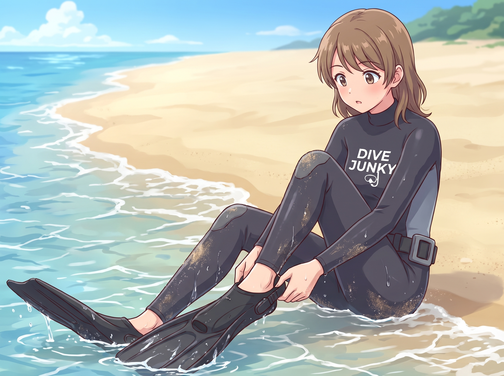
自分の体型を満たす長さのウエイトベルトがサービスになかったことにより、ロクハンの浮力を打ち消すものが一切ないこと、協調運動障害のために姿勢維持の困難であること、それらのために水際での座位を考えていたものの、それが不可能だったこと。それにより 1 時間半もフィンを履けない事態が発生した。
図のような普通に座ってフィンを履くということができなかった。ウェイトは陸上から必須。
エントリー編で述べるが、もちろん片足立ちで、片方の手でなにかに捕まってフィンを履くのも不可能だった。
エントリーが最初の難所になることははっきりしていた。身体上の条件があるのでさっきの図のようにビーチに腰掛けてフィンを履く、マスクもスノーケルも装着する、という想定でいた。でもこの方法はうまく行かなかった。理由は以下の通り。
ウェイトベルトのサイズがなく、ノンウェイトだった。
波は概ね穏やかだったが、海なので、ある程度の周期で大きめの波が必ずくる。
この大きめの波は当日波高 50cm くらいだったのだけれど、前述の理由でウェイトベルトをしておらず、ロクハンという浮力がとてもあるスーツを着ていたこともあり、体が浮いてしまい、体幹機能障害、協調運動障害もあることから、座位を維持できなかった。
それによりゴロンゴロンと転がるばかりでフィンを履くどころではなかった。
海を知らないわけではないのだから想定が足りなかったと言える（忘れているとも言う）。
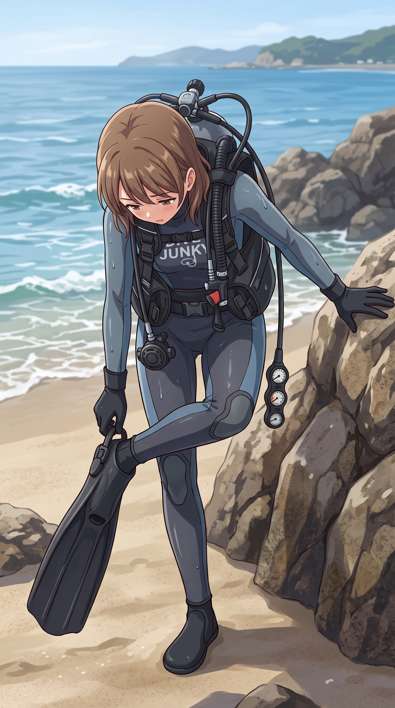
まず片足で立つというのが水陸問わずできない。僅かな波が来ただけでバランスを崩し転倒する。ここでフィンを履くのに要した 1 時間半の大半を消費してしまう。
指導インストラクターの指示により、図のような Open Water で学ぶ通りのフィンの履き方も試してみるが、これもうまく行かない。
まず前提として体幹機能障害、協調運動障害が軽度とはいえあるので、普通の日常生活で片足で立てない。
またビーチでは波が来たり、あるいは水中なので、足元の砂がどんどんと崩れる。片足で立つのは岩に掴まっても不可能だった。
さらに図ではフィンを履いているのは陸上だが、実際には腰付近まで水に浸かっている。やはり波があるので安定せずに転倒する。
Open Water のマニュアル通りだとエントリー自体が成立しないことがはっきりとした。
以上のことからエントリーのフィン装着方法の最有力候補は今のところ、やはり座位ということになる。一番姿勢を安定できる可能性が強い方法を選択するしかなさそうである。
とはいえ、座位もロクハンの浮力、ウェイトなし、ときおり寄せる大きめの波によりどうしても不安定になる。
それを考えるとあらかじめウェイトを装着して、座位でフィンを履くのが現実的かも知れない。
ただし懸念点はやはりあって、体幹機能障害、協調運動障害、そして時折やってくる大きめの波で、ウェイトをした座位のまま転倒してしまう可能性は否定できず、安全を高める要素として、体を支えるラダーのポールのような構造物があると、少しはリスクが減る可能性も考えられる。
問題はそのコストを誰が負担するのか、という点もあるが、そもそも実現性自体が不明である。
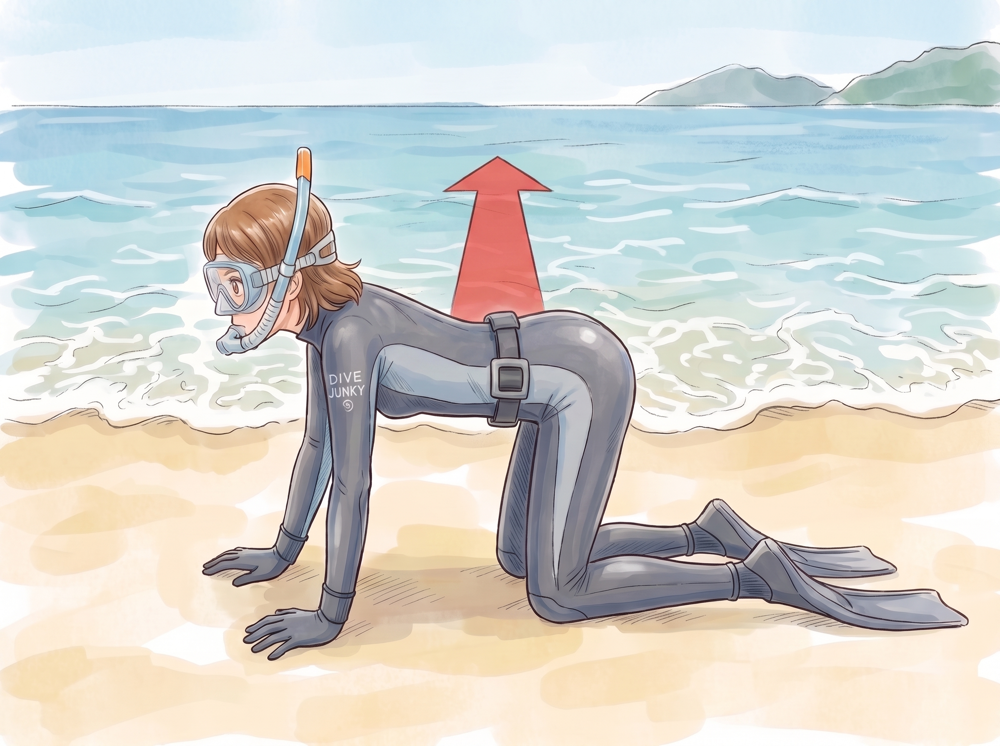
まだ未検証だけれどもしかすると四つん這いエントリーが一番安定するかも知れない。
もう一つ、対策を思いついた。こちらはもっと現実的である。
そもそも水際でフィンを履かない。波が一切届かないところで、体を一切濡らすこと無くマスク、フィン、スノーケルを装着する。
自宅では座位で 3 点セットを装着できているのだから、体が安定する場所なら 3 点セットの装着自体は不可能ではないと思われる。
水が一切届かないところで 3 点セットをすべて身につけ、エントリー自体は四つん這いで行う。もしかするとこれが一番安全で現実的かもしれない。
つまり Open Water のマニュアルに波が高くて安定しない場合、そのまま四つん這いでビーチにエキジットする方法が書かれているが、これの応用版ということになる。
これも再検証が必要になる。
さらにもう一つ思いついた。
３点セットを身につけて体育座りでお尻を引きずるようにエントリーする方法も考えることができる。
やはり水に触れることがない場所で、３点セットを身に着け体育座りのような姿勢を維持しながら、お尻を引きずるように移動して、そのまま水に入る方法である。
これなら常に波を見ながら前進できる。また両手と両脚、そして臀部で体勢を支えることが可能だと期待できる。
もしかするとこの方法が最良のエントリー方法かも知れない。
もちろん検証が必要であることは論を待たない。
またもしかするとこの２つの方法なら重機材も背負った状態でエントリー可能かも知れない。
だけれども現時点では重機材を背負った状態でのエントリーは考えない。やはり重機材という重量物を身に着けての不安定になりやすいビーチエントリーはリスクが高いと考えられる。
この辺りは専門家であるインストラクターの指示に従いたい。21 年ものブランクがあるぼくは、もう専門家ではない。素人なのだから。
以上のこともやはり検証が必要で実現可能性は確かめなければならない。それにもっと安全で効率的な方法がインストラクターから提案されるかも知れない。
とにかく砂地は岩場と違って安定した状況は一切ない。当然ボートのように機材の準備、チェック、装着などのすべての準備を終わらせて、あとはエントリーするだけという状態にまで整えてからエントリーすることもほぼ不可能だ。
なので、体を安定させながらエントリーする方法の開発が欠かせない。
絵に描いた餅はいらない。
危険でないエントリー方法が必要なのだ。Open Water で学ぶエントリー方法であっても、障がいがある以上危険なのだ。他の方法を探らなければならない。
以下の問題があった。
以下の問題があった。
エキジットについては、インストラクターの藤原氏より行動中は自分で考えるよりインストラクターの指示に従うのがよい、とのアドバイスがあり指示に従った。
つまり図のように腰辺りの水深でフィンを脱ごうとした。不可能ではなかったけれど、転倒する、ゴロゴロ水面で転がるなど、エントリー時の問題を再現しただけだった。
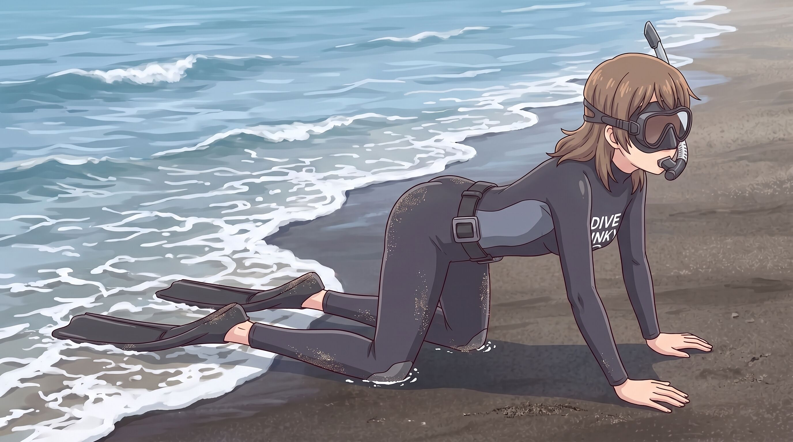
1985 年 NAUI Japan 発行の NAUI SCUBA MANUAL 105 ページには、波が荒いときは四つん這いになって這い上がるように図入りで書かれている。
もちろん現在のマニュアルにも図はないもののテキストでは這い上がることも考えろと書かれている。
結局この古いマニュアルに図入りで書かれている方法、そして 1987 年に Open Water I の講習で実際に学んだこの方法が、自分のような体幹機能障害、協調運動障害がある者にとっては最も安全にエキジットできると言えそうだ。
そしてエキジットした後に、水がかからない場所で落ち着いて機材を脱装すればよい。
もちろんこれも再検証が必要になる。
今回ウェットスーツは 10 月 8 日という気温、水温が下がり始めていることを鑑み、生地の厚みが 6.5mm の上下のもの、つまりロクハンを着た。
現役のアシスタントインストラクター時代は暖かい季節は 3mm のワンピースを着ていた。昨年新調したウェットスーツですら 5mm ワンピースなのでスーツの持つ浮力は大きめに見積もる必要があった。
この大きな浮力が、今回はエントリー時、エキジット時の不安定要因の一つとなった。
このような大きな浮力のスーツを身に着けているときは、やはり水に入る前のウェイトベルトの装着が欠かせない。
またスーツは水に入る前に上下とも装着を終えておくべきであった。上のスーツを水に入ってから着ることがフィンなどの他の機材まで海の中で装着するプロセスを惹起した。
エントリーまでのプロセスを詳細に設計し直し、安定したエントリーを図るべきだ。
今回の最大の失敗要因だと言えるかも知れない。
レンタルウェイトベルトの長さが短く、腹囲 110cm のぼくがロクハンを着た場合、腰に巻けるウェイトベルトがなかった。
そのために BCD にウェイトポケット、トリムウェイト、BCD の通常のポケットに必要ウェイトをすべて突っ込むことにより、水面、水中でのバランスが崩壊した。
また今回身につけたウェイトは 16kg もあり、どう考えても極端なオーバーウェイトだ。最終的に 16kg にまで増やすことになった要因として、エントリープロセスの崩壊による余裕のなさなどもあるけれど、せめて 10kg スタートまで減らすべきだろう。
水面での正しい中性浮力が得られるウエイト量調整、安定したフィートファースト潜降がやはり優先されるべきだろう。
オーバーウェイトはそもそも中性浮力再獲得の目的に反するし、再獲得を阻害する。
オーバーウェイトを問題解決の手段として採用するべきではない。
フィンは今回 Cressi GARA TURBO FLEX を持っていった。理由は単に今手元には他には GARA TURBO BOOST しかなかったからである。履きなれた GULL Mew は串本に置いてある。
Cressi のフィンのフットポケットは柔らかい素材ではあるけれど GULL Mew のようにゴムではない。Mew のようにかかとをペロンとひっくり返すことはできない。靴のように足をつま先からフットポケットに突っ込んで履くしかない。
つまりこの Cressi のフィンの場合、軽度とは言え体幹機能障害、強調運動障がいがある以上、ビーチエントリーでは陸上でフィンを履く以外に方法がないと言える。
またフィンが GULL であろうと、他社のストラップタイプフィンであろうと、水中での装脱着では転倒リスクが無視できない。GULL のフィンであろうと、ストラップタイプのフィンであろうと装脱着は陸上で安定した姿勢で行うべきである。
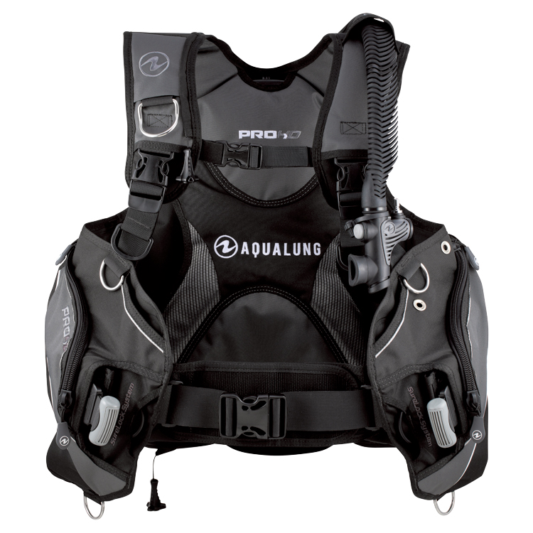
BCD は最近購入した Aqualung Pro HD Men を使った。この BCD を購入した理由は単に安かったからだ。安いのに D 環も複数あり便利そうに見えた。
便利そう、そして D 環も複数ある。しかも安い。
もうプロになるわけではないからレンタルレベルの製品としては良い買い物をしたかも知れないと思った。使ってみるまでは。
結論としては悪くはなかった。悪くはなかったが良くもなかった。レンタル用と考えれば標準的という印象。
Scuba Pro Classic と比較するのはフェアではないけれど、Scuba Pro では最初からほぼ無意識に操作できたありとあらゆる機能がいちいち意識したり、あれはどこだと探し回らないと見つけることができなかった。
浅い水深でいろいろ探し回る必要があったのはかなりストレスで致命的だった。余裕を失っている状態であれこれ探すのはかなり困難だった。ほぼ不可能だったと言って良い。
ただこの BCD に対してフェアであるために念を押しておく必要はある。
結局はこの BCD に対する理解不足で、海でまともに使うことが出来なかったとだけは言える。
ぼくが準備不足だったのだ。
実機が目の前にあるのだから微に入り細に入り細部まで家で予め触り倒しておくべきだった。それがウエイトベルトがないことに次ぐ今回の第２の敗因である。
以下この BCD に対する見落とし、苦手とする部分などをまとめていく。
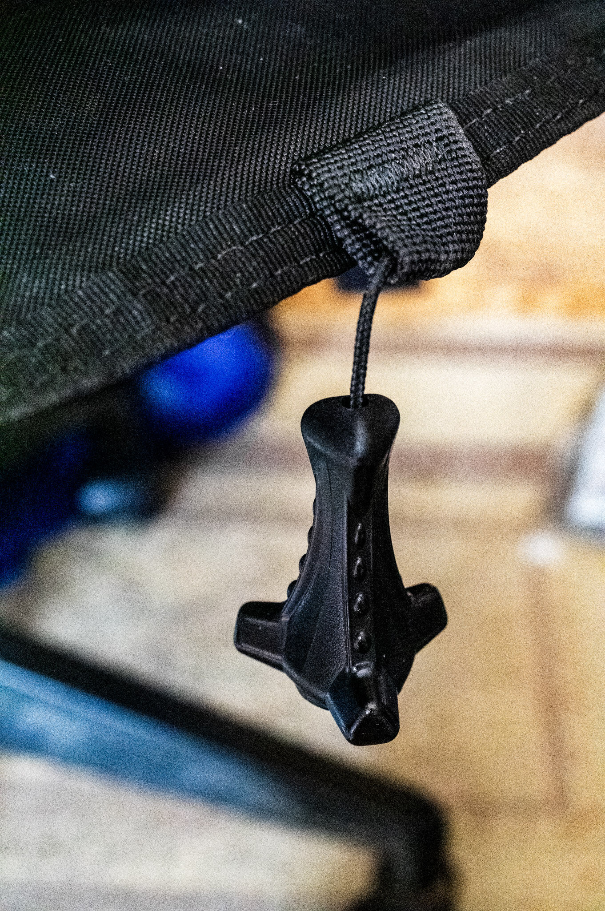
自分が困ったのがこのプルノブが見つけられないということだった。場所は頭ではわかっているのだけど、潜っているときに手探りで探しても見つからない。BCD の下の裾にあるはずだけれど見つからない。
プルノブ自体がまず小さい。そのためか手探りで探してもまったく見つからない。また Scuba Pro などと比べると形状も良くない。あちらの形状はグローブをしていても手に触れれば一瞬でプルノブだと体が発見する。頭ではなく体が発見する。
Scuba Pro のプルノブは脳でなく脊髄で発見できる。そんな感じなのだけど、Pro HD Men のプルノブはそうはいかない。手探りで探し回らないと見つからない。
もしかするとこのプルノブは比重が軽くて浮いていたのではないか？とすら勘ぐってしまう。
あまりに使いづらいので、位置には慣れようと考えているが、プルノブ自体は Scuba Pro のものに交換予定。
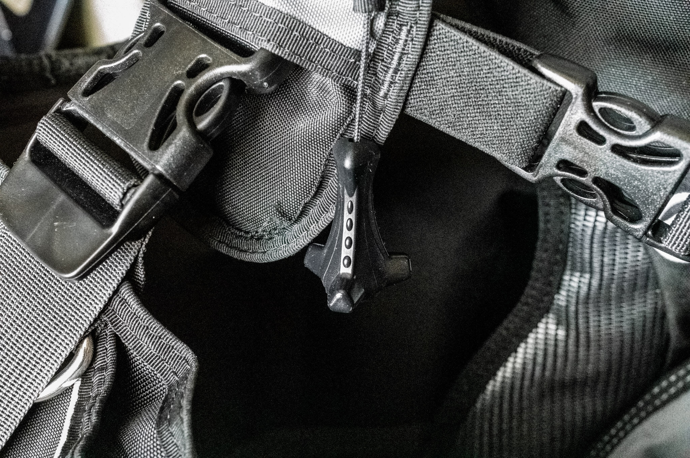
そして超絶やっかいだったのが右肩バルクバルブのプルノブになる。
潜水中にこのプルノブを引きたいことが何度もあったけれど引けなかった。やはり見つけられない。
探すとプルノブより先にショルダーベルトのアジャストバックル、チェストベルト、右肩の D 環ばかり先に見つかる。そして肝心のプルノブはなぜか見つからない。
やはりこのプルノブは比重が軽くて下に沈まずに上に浮いていたのではないか？と思う。
あまりに使いづらいので、やはり位置には慣れようとは考えているが、プルノブ自体は Scuba Pro のものに交換する予定。交換はこちらのプルノブの優先順位が高い。
これほど苛つく BCD は初めてである。
※ 個人の印象です。
なお繰り返すが BCD の問題はぼくの確認不足が原因である。細かい仕様に疑問はあるがメーカーに責任はない。
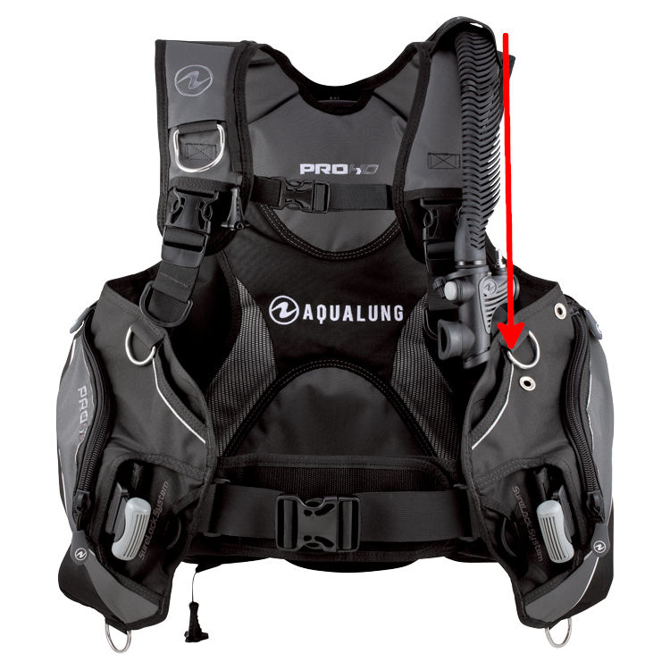
これ以降の BCD に関する問題は完全にぼくの責任。
Aqualung Pro HD Men はパワーインフレーターを掴んで、インフレーターホースを伸ばすように引っ張れば、インフレーターホースの付け根にあるバルブからエアーが抜けるようになっている。
これはマニュアルに書いてあるし、実機を触ればそのとおりであることがわかる。
マニュアルに目を通していたものの雑に斜め読みしていた。
マニュアルに書いてあるし海に出かける前に触ればわかることなのに、気がついていなかった。新規導入機材のチェックが雑すぎたと言える。
もちろんこれだけで BCD 問題が解決されたとは言えないけれど、理解していれば BCD 問題が緩和された可能性はある。
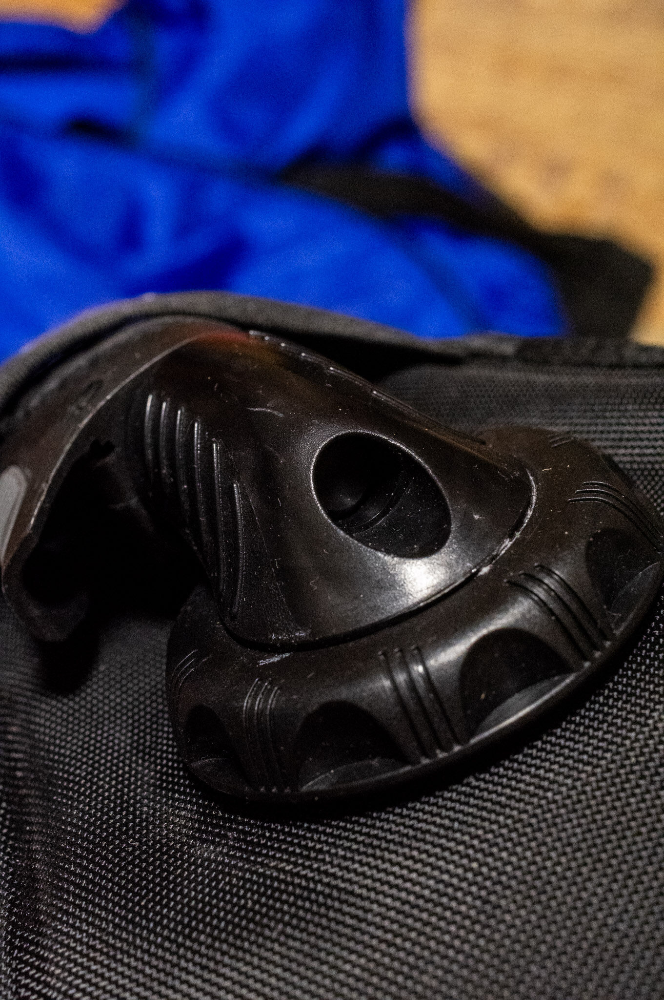
画像はインフレーターホース肩口の排気弁出口。インフレーターホースの肩口に穴のようなものが見えるが、そこから BCD 内部のエアーが排気されることになる。
インフレーターホースを BCD に取り付けるパーツのサイドに画像では穴のように見えるくぼみがずらっと並んでいるが、これは穴ではなくくぼみであって、インフレーターホースを BCD から取り外しするときに手が滑らないようにするための加工である。
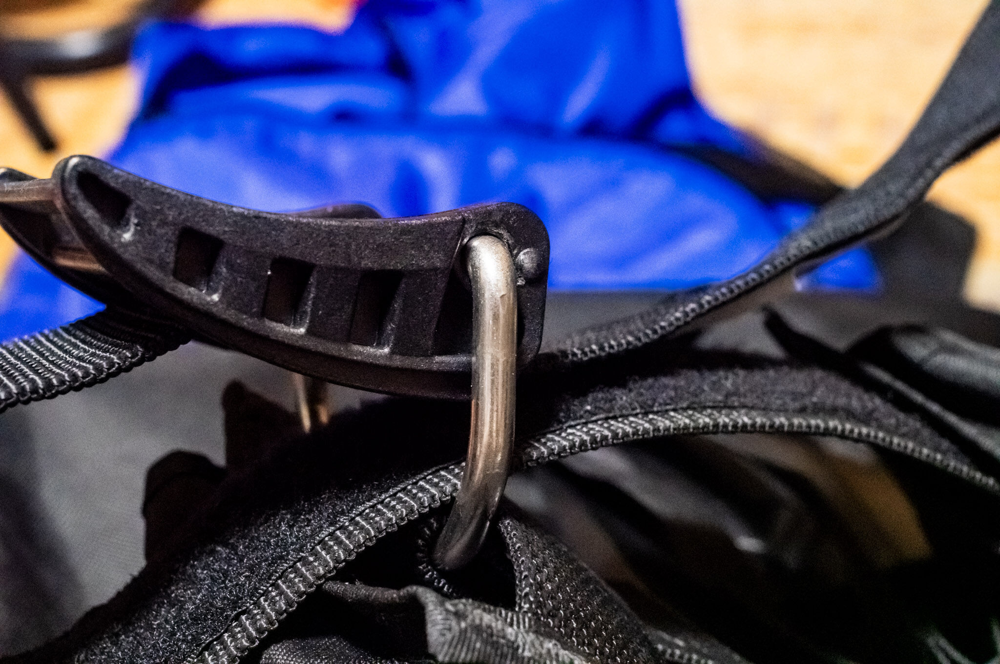
実は今回の須磨では人生で初めてタンクの脱落を経験した。
タンクは 12 リットルスチールだったので 10 リットルよりかはわずかに長い。長いのだけれど、潜っている途中でやたらとセカンドステージが引っ張られる。
しかもタンクブーツが太ももの付け根辺りに当たっている感じがする。臀部上部に当たるのならまだしも太ももの付け根に当たるのはどう考えてもおかしい。
おかしいので藤原さんに自分のタンクを指さして「おかしくない？」と尋ねる。
すると藤原さんは返事をすることもなく、ずれ落ちかけているタンクをグイグイと直し始めた。
「おれは ITC で問題行動を起すスタッフかっ」と自分自身に突っ込みながらタンクを直してもらうまでじっとしている。昔だったらスクーバユニットを脱装して自分で直してしまっていただろうが、今はそれをやる自信がない。21 年前の自分と今の自分とは違う。
藤原さんには本当に申し訳なかった。中堅オーナーにまるで ITC の問題解決みたいなことを最初から最期まで延々とさせてしまった。
わざとじゃないのでほんとすいませんでした。ほんとごめんなさい。わざとじゃないから問題なのだけど。
それで画像はタンクずり落ちの原因となったバックルの状態。
画像では金属製のパーツと樹脂製のパーツが 90 度くらいの角度で曲げられている。そして樹脂製パーツのエンボス加工のポッチリによりクリックを作ることで一時的に画像の角度で仮止めできるようになっている。
なぜこんな加工があるのかというと、タンクベルトをバックルに通しやすくするためだ。
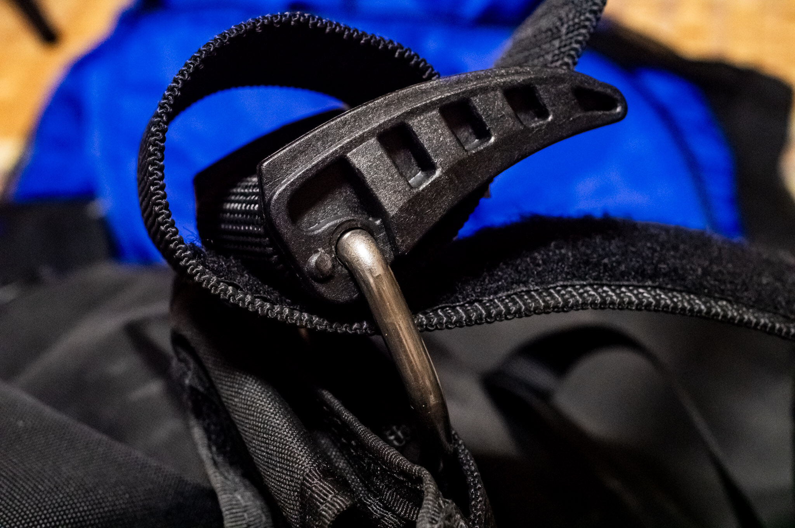
そして BCD をタンクに取り付けるときに、樹脂パーツと金属パーツの角度を画像のようにクリックを越えてセットしなければならない。そしてこの状態でタンクがきちんと固定されているかを確認しないといけない。
前の図のような外側に折れ曲がった状態でタンクベルトの調整を終わったつもりになってはいけない。そうしないとぼくがやらかしたようにタンクが BCD から抜け落ちる。
このことは Aqualung Pro HD Men を使うときの重要事項なので他の人は気をつけて欲しい。
初めて使った TUSA にもぼくが愛用していた Scuba Pro Classic にも、こんな機構はなかったので、自分の機材チェックが足りなかったと言え「はめられた」と思わなくもなかったけれど、やっぱりきちんと細部までチェックしなかった自分が悪い。
つまりこの BCD はタンクベルトの調整が必要なときは、すごく面倒な BCD だと言える。
※ あくまで個人の感想です。
それともう１点。
マニュアルにはタンクの直径に合わせてタンクベルトとバックルは調整済みと書かれているけれど、そんなことはなかった。
マニュアルを信じて失敗した。
そもそもマニュアルのとおりにタンクベルトがバックルに通されていない。購入したら必ず自分で確認しましょう。出荷状態ですぐ使えると書かれていても信じちゃダメだ。
| 対象 | 今回得た知見 | 次回検証項目 |
|---|---|---|
|
ロクハン |
浮力がエントリー時の不安定要因になった |
|
|
ウエイトベルト |
サイズ不適合で予定した装備構成が成立しなかった |
|
|
フィン |
自宅での試着だけでは現場の装着動作を評価できなかった |
|
|
BCD |
操作部を発見するのに時間と注意を要した |
|
藤原インストラクターより以下のとても重要な提言、アドバイスがあった。
今のようにエイヤッと中性浮力の再獲得を目指してもあまりに効率が悪い。課題を細分化して 1 つずつ達成していくのが近道であり、そうすべきという助言を頂いた。
至極真っ当であり今回の惨状により特にその通りだと認識した。
次回は完全にダイバーとして 0 ベースに戻り、Open Water の講習を受講した 39 年前同様にすべてを忘れて基礎から、それこそ 0 からやり直そうと考える。
これは劣化ではなく、再自足のための第１歩である。復活のための第１歩である。再生のための第１歩である。
トレーニング後、藤原インストラクターとしばし話し込む。
去年の串本以来、自分が Open Water の基準を満たしていない自覚があり、今回の須磨での再トレーニングで強固にそれが再現された。そのため Open Water の再履修の必要性を感じていたこともあり、そのことを藤原インストラクターに問うてみた。
藤原インストラクターの返事は以下のようであった。
現在の年齢から（恐らく年齢だけではないと思われたはずだ）Open Water のすべてのプロセスの再履修は厳しいと考える、なので Buoyancy Control スペシャルティの受講を考えてはどうか、との提案があった。
自宅に持ち帰り検討した結果、それが望ましかろうと判断した。
現在藤原さんに費用などを問い合わせ中だ。
以下、2026/10/08 の須磨での再トレーニングで明確化された問題点の整理と対策を簡易にまとめる。
| 分類 | 今回の例 | 次回に向けた扱い |
|---|---|---|
|
事前に排除できる条件 |
|
|
|
|
|
|
当日の環境条件 |
|
|
|
継続的身体的制約 |
片足立ちや体幹安定の困難 |
|
次回の検証兼浮力調整能力の再獲得トレーニングならびに本ダイブログに記載しきれなかったものについては「協調運動障害とスクーバダイビング 〜ビーチダイビング編〜」にまとめるものとする。